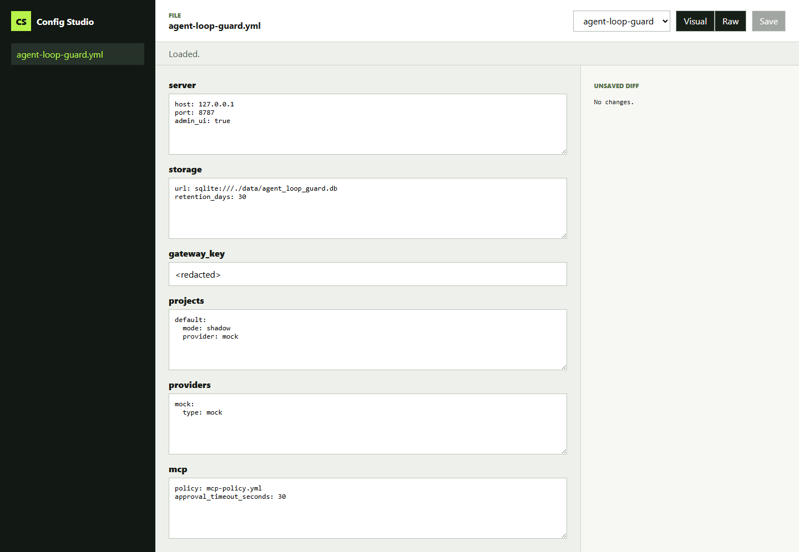

Two modes
Visual top-level controls for scanning and raw YAML for exact edits.
Frontend tooling case study
A local React and TypeScript workspace for editing YAML through raw text or JSON Schema-backed visual controls, with validation and review before disk changes.
01 / Experience
The interface keeps file navigation, mode selection, schema choice, validation status, and unsaved diff visible in one work-focused layout.

02 / System
Visual top-level controls for scanning and raw YAML for exact edits.
Ajv 2020 validates project-specific JSON Schemas before save.
A line-oriented unsaved diff shows what changed before the write.
The backend writes a backup, creates a temporary file, then renames it into place.
03 / Security
Canonical path checks reject traversal and symlink escape. Request bodies are bounded, files must already exist before editing, and the server binds only to loopback.
04 / Results
Bundled configuration schemas.
Visual and raw editing modes.
Smallest verified viewport.
Passing tests plus one Windows symlink skip.
Status
The local package includes the CLI, backend, React app, schemas, documentation, CI, and security tests.